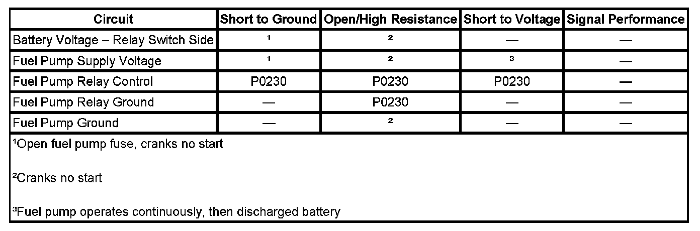

Fuel Pump Electrical Circuit Diagnosis
FUEL PUMP ELECTRICAL CIRCUIT DIAGNOSIS
DIAGNOSTIC FAULT INFORMATION

Perform the Diagnostic System Check - Vehicle prior to using this diagnostic procedure. Initial Inspection and Diagnostic Overview
CIRCUIT/SYSTEM DESCRIPTION
The control module enables the fuel pump relay when the ignition switch is turned ON. The control module will disable the fuel pump relay within 2 seconds unless the control module detects ignition reference pulses. The control module continues to enable the fuel pump relay as long as ignition reference pulses are detected. The control module disables the fuel pump relay within 2 seconds if ignition reference pulses cease to be detected and the ignition remains ON.
DIAGNOSTIC AIDS
The following conditions may cause the fuel pump fuse to open:
- The fuse is faulty.
- There is an intermittent short to ground in the supply voltage circuit of the fuel pump.
- The fuel pump has an intermittent internal condition.
CIRCUIT/SYSTEM VERIFICATION
1. With the ignition ON, engine OFF, command the fuel pump relay ON and OFF several times using the scan tool output control function. You should either hear or feel the relay click and the fuel pump should turn ON and OFF with each command.
- If the fuel pump operates continuously, test for a faulty relay or a short to voltage in the supply voltage circuit of the fuel pump.
CIRCUIT/SYSTEM VERIFICATION
1. With the ignition OFF, remove the fuel pump relay from the underhood electrical center.
2. With the ignition ON, engine OFF, probe the control circuit of the fuel pump relay with a test lamp that is connected to a good ground. Command the fuel pump relay ON and OFF with a scan tool. The test lamp should turn ON and OFF with each command.
- If the test lamp does not turn ON and OFF, test for an open, high resistance, or a short to ground in the fuel pump relay control circuit, an intermittent or a poor connection at the engine control module (ECM). If the circuit tests normal, replace the control module.
- If the test lamp remains illuminated with each command, test for a short to voltage in the control circuit of the fuel pump relay, an intermittent or a poor connection at the ECM. If the circuit tests normal, replace the control module.
3. Connect a test lamp between the control circuit of the fuel pump relay and the ground circuit of the fuel pump relay. Command the fuel pump relay ON and OFF with a scan tool.
- If the test lamp does not turn ON and OFF, repair the open or the high resistance in the ground circuit of the fuel pump relay.
- If the test lamp does turn ON and OFF, test for an intermittent and for a poor connection at the fuel pump relay, or a faulty fuel pump relay.
4. Inspect the fuel pump fuse.
- If the fuel pump fuse is open, test for a short to ground in the supply voltage circuit of the fuel pump, or a faulty fuel pump module.
5. With the ignition ON, engine OFF, probe the battery positive voltage circuit of the fuel pump relay with a test lamp that is connected to a good ground.
- If the test lamp does not illuminate, repair the open in the battery positive voltage circuit.
6. Connect a 15-amp fused jumper wire between the battery positive voltage circuit of the fuel pump relay and the supply voltage circuit of the fuel pump.
- If the fuel pump operates, test for an intermittent or poor connection at the fuel pump relay, or a faulty fuel pump relay.
- If the fuel pump does not operate, test for an open or high resistance in the supply voltage circuit of the fuel pump, an open or high resistance in the ground circuit of the fuel pump, an intermittent or poor connection at the fuel pump module cover, or a faulty fuel pump module.
REPAIR INSTRUCTIONS
Perform the Diagnostic Repair Verification after completing the diagnostic procedure.
- Control Module References for ECM replacement, setup, and programming.
- Fuel Tank Pump Module Replacement (1500 LWB - 117.3L (31 gal) Tank + E85) Fuel Tank Pump Module Replacement (1500 SWB - 98.4L (26 gal) Tank + E85) Fuel Tank Pump Module Replacement (1500 Series) Fuel Tank Pump Module Replacement (2500 LWB - 43.5L (11.5 gal) Tank-Rear) Fuel Tank Pump Module Replacement (2500 LWB - 98.4L (26 gal) Tank-Front)
- Relay Replacement (Attached to Wire Harness) Relay Replacement (Within an Electrical Center) Verification Tests